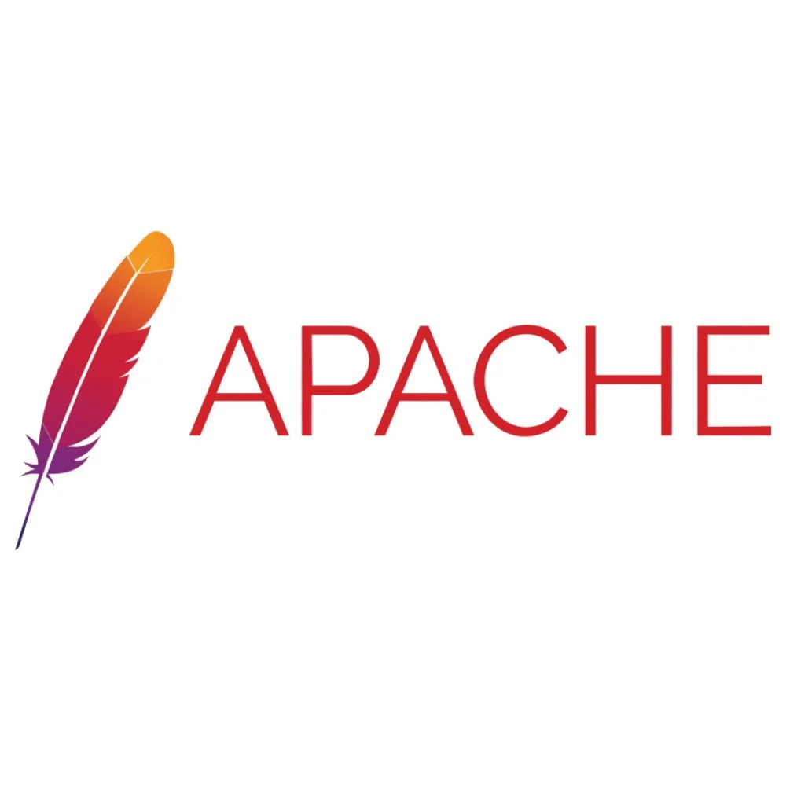

A system that delivers content all over the internet?

Apache is an open-source software that delivers web content over the internet.

Nginx is an open-source software used for web infrastructure tasks beyond just web serving.
| Website | Availability | Latest version |
|---|---|---|
| Nginx | Solaris, BSD Variants, and Linux | NGINX 1.29.5 and NGINX 1.28.2 |
Microsoft IIS A web server hosting anything such as websites, media, and applications.
Making digital versions of something.
A powerful virtualization product.
a software-based computer that runs an operating system on a host machine.
Host Machine: The system that is running where the hypervisor is installed.
Guest Machine The system that is virtualized in the virtual machine.
An organization used to develop free software.
A tool used for enhancing security on your Linux system.
A program for logging into a remote machine and executing commands.
Identifier used for a network interface for devices to communicate.
Used for turning an IP address into network.
A character device file that is an image of the main memory.
a skill used for directing a request from one port to another.
The name of the same machine your working on.
It represents the localhost and loopback address.
Git is a underlying version control system that runs on local machines and allows you to track changes in coding.
An open source community where people all over the globe can work on different coding projects.